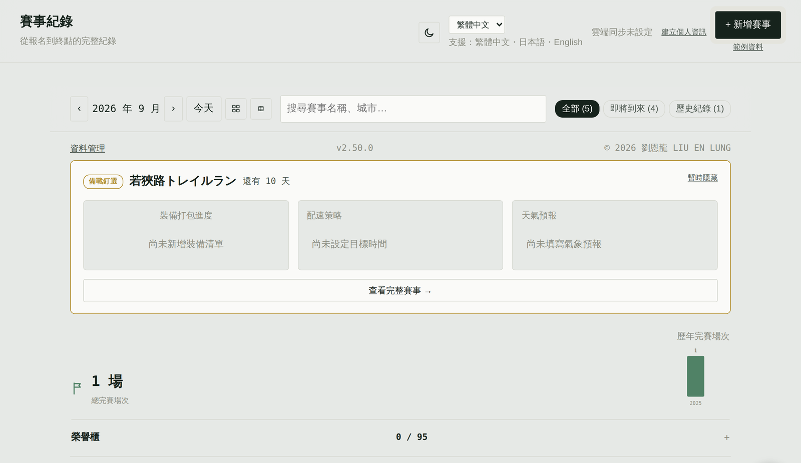
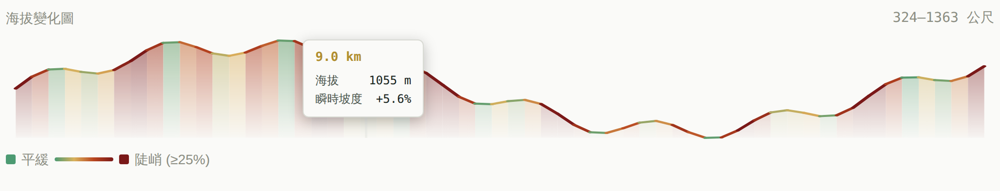
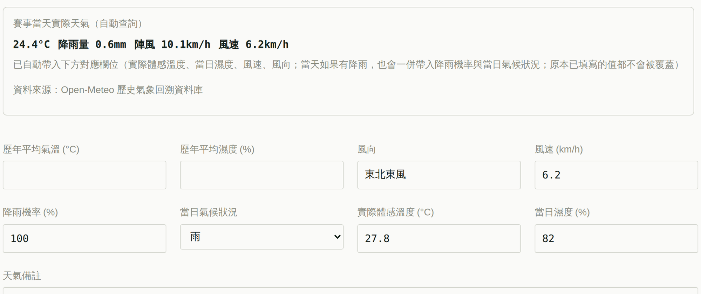
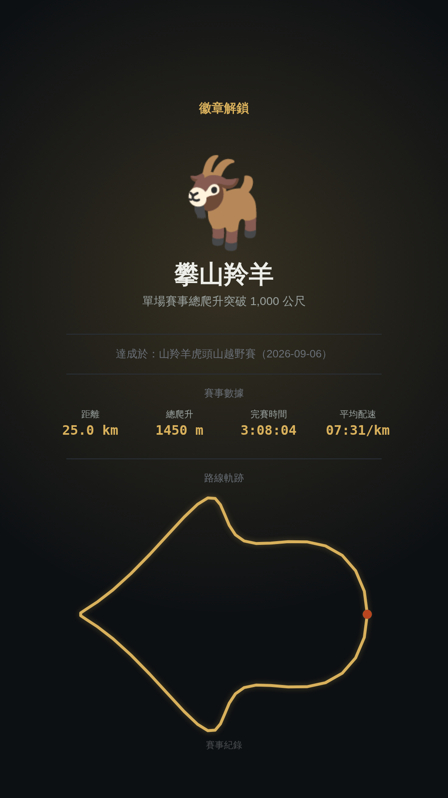

搶先體驗中，還沒正式公開
一個給路跑、越野跑、鐵人三項愛好者的賽事紀錄網站，目前還在 Beta 階段。 行事曆管理報名進度、自動查詢天氣與地形、累積成就徽章 ——功能都已經能用，介面跟細節還在持續打磨。
手錶紀錄在 Garmin、COROS、Strava？先看怎麼匯出 FIT 檔
報名到抽籤到起跑，狀態一目了然
行事曆依運動別上色，檢視每場賽事的報名、抽籤、備戰、完賽狀態
- 14 天內的賽事會自動置頂成「備戰卡片」，提醒裝備打包進度與配速策略。
- 手上一份 Excel 報名紀錄？直接匯入，不用一場一場手動輸入。
- 獎牌牆與緊湊表格兩種檢視模式，方便跨年比對。
- 從官網複製賽事名稱與日期，在頁面空白處貼上就開好新增表單；訂房確認信、機票或高鐵票貼上，就變成這場的住宿與交通紀錄。
- 預算卡直接算出這場總共花多少，報名費還沒繳、住宿沒涵蓋比賽當天、去程晚於起跑都會提醒。
路線還沒跑過，先讓數據幫你心裡有底
路線、天氣預報、配速手環
- 匯入 GPX、TCX 或 FIT 軌跡，海拔變化圖自動畫出來，移動滑鼠就能看到任一點的坡度與里程。
- 賽事開始前 7 天，即時天氣預報會自動查詢起跑時刻的氣溫、降雨機率與陣風，並順手填進降雨機率、風速、風向欄位。
- 還沒比賽就能先看這個地點、這個時節的平均氣溫與濕度（過去 5 年同日前後 3 天，共 35 筆資料）。
- 搭配配速試算工具，生成一張可以戴在手上的分段配速手環。

完賽之後，數據會自己說話
完賽後，匯入 GPX、TCX 或 FIT 軌跡，或直接貼上成績頁
- 分段配速自動抓出相對快慢，心率依「儲備心率法」換算成跑步、騎車、游泳三種個人化區間。
- 歷史賽事當天的實際天氣會自動回填——氣溫、降雨、風速風向。
- 成績查詢頁整段反白複製、貼上，大會時間、晶片時間、總排名、分組與性別名次、號碼布一次填好。
- 鐵人三項、二鐵自動拆出游泳、轉換區、自行車、跑步各段成績——手錶就算用單一模式錄完全場，也能依速度推算出來。
- 每場完賽都有一張五維雷達圖，距離、爬升、溫度、心率、穩定度一眼看出這場有多硬；多項運動會把游泳、騎車、跑步疊在同一張，看得出哪一段最吃力。

累積的不只是里程，還有成就感
- 103 個成就徽章橫跨探索、地形、速度、跨界、裝備補給五大類別，達成當下有開箱慶祝動畫。
- 每個徽章都能下載成一張直式成就圖，自動附上那場賽事的關鍵數據與路線軌跡，直接發到社群限時動態。
- 成績分享圖有方形貼文與限時動態兩種版面，可放心率、戰靴、補給、軌跡與 QR code，附一鍵複製的 IG 文案；登入後還能替每場賽事建立公開連結，朋友不用帳號就看得到。
- 長按 PB 數字解鎖整份生涯回顧，也能下載成一張高畫質長圖。
- 鞋款也能個別追蹤累積里程，退役前提醒你換一雙。

比賽之外，平常的訓練也一起記
訓練紀錄、鞋款里程、賽前週期
- 匯入平常訓練的 FIT、GPX、TCX，一次選幾百個檔案也可以；重複的自動略過，跑步機、室內訓練沒有 GPS 也收得進來。
- 訓練跟賽事分開存放，不會影響生涯統計、PB 或徽章；比賽當天的檔案預設不重複匯入，鞋款里程則會自動加上訓練的公里數。
- 依賽事距離自動建議準備週期與減量週數（全馬 16 週、226 鐵人 24 週⋯），賽事頁直接畫出賽前每週里程，看得出減量有沒有做到。
還沒從手錶平台匯出過？Garmin、COROS、Strava 匯出 FIT 檔懶人包一步一步帶你做。
不綁帳號，但需要同步的時候也在
- 資料預設存在瀏覽器裡，隨時可以匯出成 JSON 或 CSV 備份。
- 想跨裝置同步的話，選用 Google 帳號登入即可，賽事、訓練紀錄、鞋款、補給品、個人資料、裝備範本、徽章都會一起同步，本機資料永遠優先。
- 賽事也能一鍵加入 Google 日曆，或匯出 .ics 行事曆提醒。
- 誤刪的賽事會先進垃圾桶，30 天內都能還原。
- 整個網站可以安裝成手機 App 桌面圖示，開過一次之後沒訊號也能打開。
- 介面字級有小／中／大三段，手機上也能把字放大。
常見問題
為什麼寫著 Beta？現在能用嗎？
功能都已經可以正常使用，資料儲存方式不會因為還在 Beta 階段而受影響；只是介面跟部分細節還在持續調整，還沒正式對外公開。如果你發現任何問題或有想法，很歡迎回報。
資料安全嗎？我的賽事紀錄存在哪裡？
資料預設只存在你自己的瀏覽器裡，不會上傳到任何地方。如果選擇用 Google 帳號登入，才會同步到你自己的帳號，方便跨裝置使用；只有你自己替某場賽事建立公開連結時，那一場的成績與路線才會公開，預算、筆記、裝備清單不會。也可以隨時匯出成 JSON 或 CSV 自行備份。
需要付費嗎？
不用，整個網站免費、沒有廣告，也不需要建立帳號才能使用。
支援哪些裝置和瀏覽器？
只要是現代瀏覽器（Chrome、Safari、Edge、Firefox）就能使用，手機、平板、電腦都可以；也能安裝成手機 App 桌面圖示，離線時也能開啟。
可以匯入我原本的賽事紀錄嗎？
可以，支援 Excel 報名紀錄一次匯入，也能匯入 GPX、TCX、FIT 軌跡檔補上路線與海拔資料；成績查詢頁、訂房確認信、機票這類文字，複製後在頁面空白處貼上就會自動辨識填入。不知道怎麼從手錶平台匯出，可以看匯出 FIT 檔懶人包。
匯入訓練紀錄會影響我的比賽統計嗎？
不會。訓練紀錄跟賽事分開存放，生涯統計、PB、徽章都只看賽事；唯一會用到訓練里程的是鞋款的累積里程。
支援哪些語言？
目前支援繁體中文、日文、英文三種介面語言，隨時可以切換。